A self-set proposal to turn an automated lighthouse into a home for four artists.
Fastnet is a small slate-rock island off the coast of West Cork, once a manned lighthouse, now fully automated and empty most of the year. METAMORPHISIS was a studio project imagining it reoccupied: an artist residency built into the existing outbuilding, with room for up to four artists to live, work and perform.
The brief I set myself was transformation. A modular room, built from bespoke roll-up walls and pegboard partitions, converts between up to four private bedrooms and a single performance space, where visiting audiences can watch the work made on the island performed against a backdrop of open Atlantic.
Designing for a working lighthouse meant thinking about every room on its own terms: heat, air, light and sound, one at a time. The engine room produces a genuinely unnerving amount of noise, loud enough to carry through open doors to the floors directly above and below it. The bedrooms needed to stay quiet against the sea, the birds, the weather and the engine, while still letting whoever's working in them look out at the water rather than feel shut away from it. The larder needed to stay cooler and darker than everywhere else to keep food longer, while the kitchen needed real ventilation for cooking smells and a washing machine running nearby.
The kitchen unit got its own dedicated section in the report. Cooking alongside someone in a shared kitchen, getting in each other's way, is one of the more frustrating everyday experiences there is, so the unit splits into four separate stations, each with its own mini fridge and chopping area, built around a shared central sink with taps that rotate to either side. Between the stations sits a utensil drawer and two bins, compost on top, recycling below, with a foot pedal so the recycling bin opens without anyone needing to bend down. The whole unit runs almost like a sentence: food gets prepped at one end, cooked in the middle on ovens big enough for two rings each, and eaten at the other end, where the unit becomes a dining table. It's built from polished concrete and red oak, and it does the same thing the building does at a larger scale, supports people working alongside each other while still giving each of them their own space.
None of this came from working off plans alone. I carried out a full site survey and a set of architectural studies of the island itself: the ferry access points, the weather windows that limit when boats can safely cross, the existing pantry and storage built into the lighthouse and outhouse, before any of the design work started. The building's stacked window system grew out of that study too: each window is a separate component, sloped at the top and recessed by 10mm so rain runs off rather than pooling, the same way slate itself naturally sheds water, layered and angled, never flat. The form isn't just borrowed from slate's behaviour, it's borrowed from its look: the windows read as another outcrop of the same rock the building sits on, slate everywhere across the island.
I never got onto the rock itself, landing isn't really possible outside of Irish Lights' own arrangements, but I did take a boat trip out to see it. It's magnificent in person, we circled the rock three times in both directions before heading back. Beyond that, the whole design was built from plans Irish Lights kindly shared with me, which is part of why the report itself is so paper-based, ruler-scans and all.
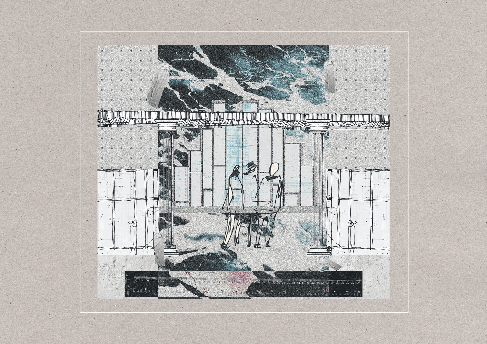
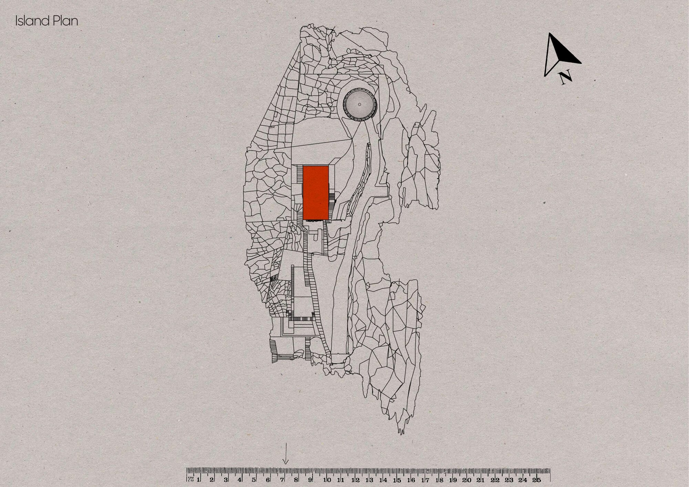
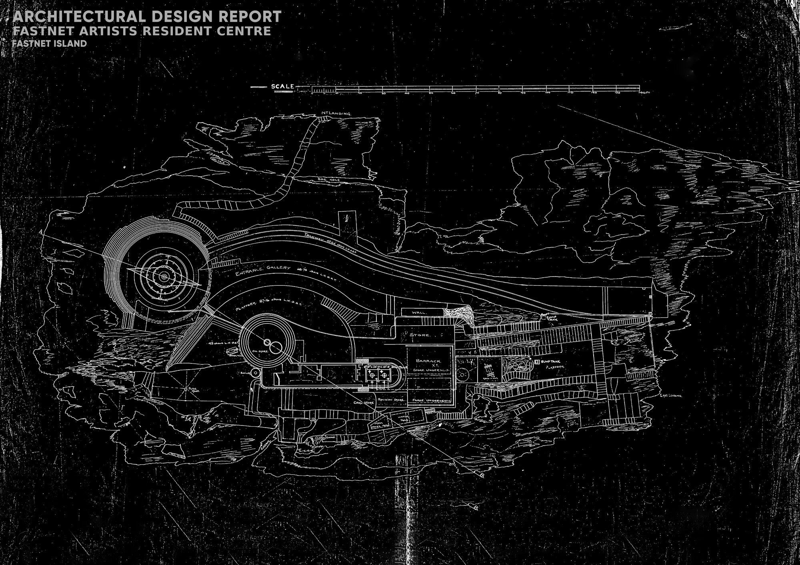
The same logic, flexibility under pressure, runs through the modular floor. The lighthouse itself was the first place I tried to put this residency, but once I tested the actual floor space against everything the brief needed, there simply wasn't room. That's part of why the outbuilding's modular floor has to do so much work: one footprint, completely reconfigurable, rather than a building with a separate room for every function.
Getting there took a lot of testing. I worked through the second floor as a twelve-square grid, each square holding a roll-out wall at its corners, trying out different layouts before settling on an arrangement where up to four people could live comfortably, each with their own window and their own way in and out that wouldn't disturb anyone else.
The rooms divide using two systems working together: bespoke roll-out walls and bespoke pegboard walls. The roll-out walls live inside steel containers built specifically for them, wrapped around a central pole and fed out through any of four open sides, with hooks top and bottom that fasten onto the container's corner poles, so up to four walls can connect to a single structure. A spring-loaded coil keeps tension on each wall automatically, so nobody has to manually re-roll one back into place.
The pegboard walls solve a different problem. The roll-out walls divide space, but they don't give anyone anywhere to actually work, so I needed a kind of hero piece for the bedroom arrangement, something that could hold shelves and a desk wherever suited the person using it, without wasting space on furniture nobody would use. Made from cypress for its weight and water resistance, the units connect with rods through aligned holes and lock in place with rubber retainers, so residents can build a single unit, a double, or stack several together depending on what they need. Everything stores on the third floor and comes down by lift, so residents assemble their own version of the room rather than living with a fixed layout.
Both systems store away completely when a performance is happening, opening the same floor into a stage and benches for an audience of up to fifty. At that scale the room itself has to change too: a section of the floor lifts on a hoist to create a double-height ceiling, giving the space room to breathe, better acoustics, and a clearer view of the front window with the sea behind the performer, the whole reason the building's worth travelling out to in the first place.
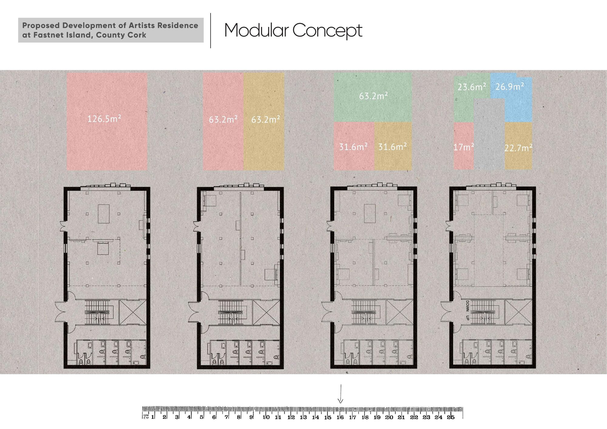
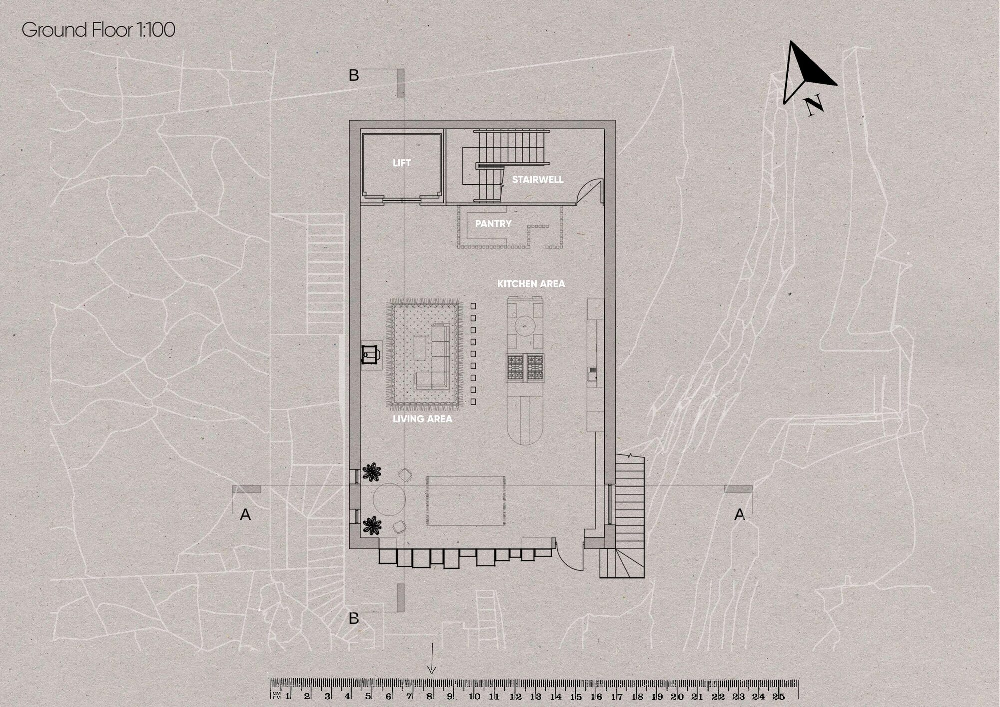
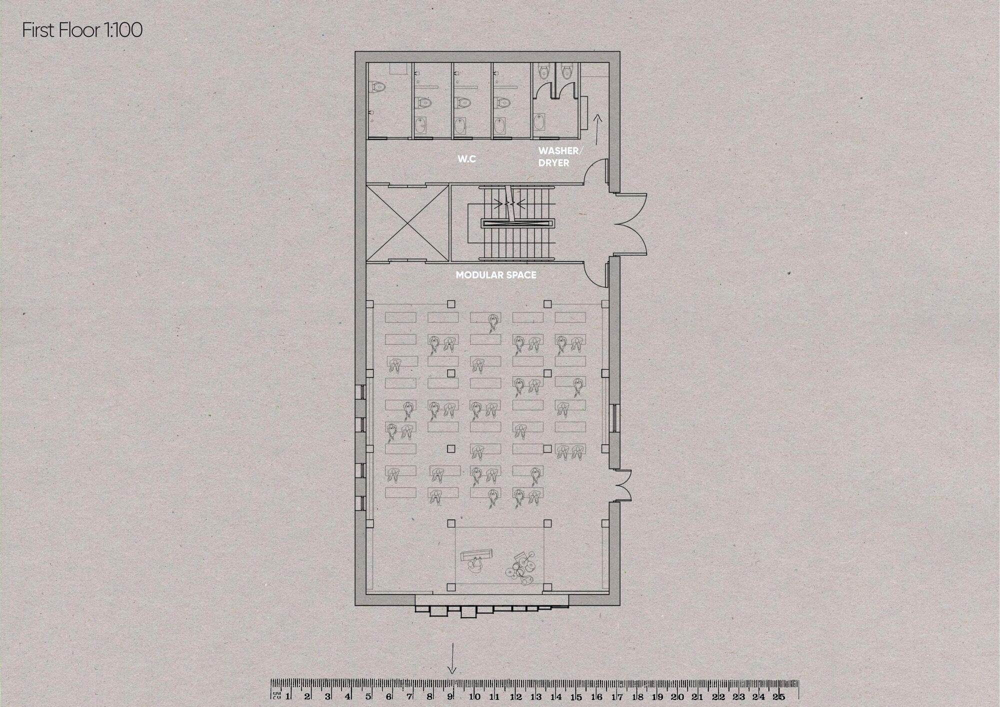
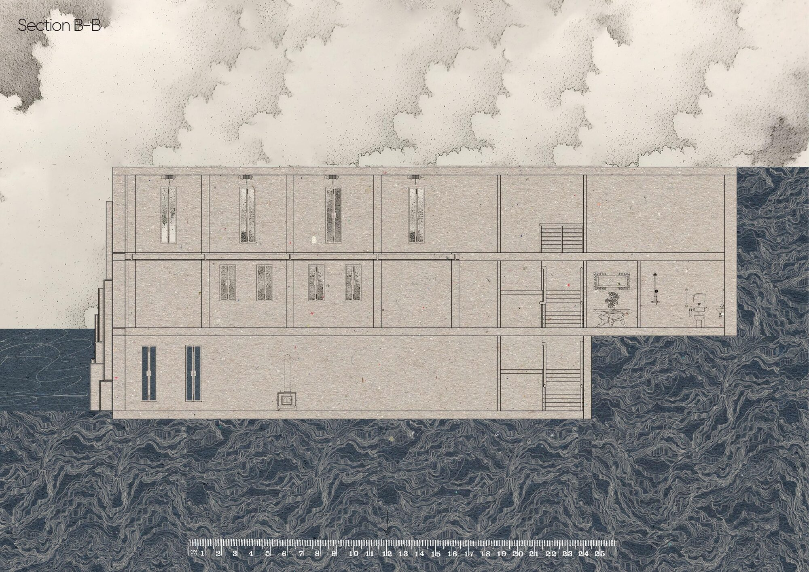
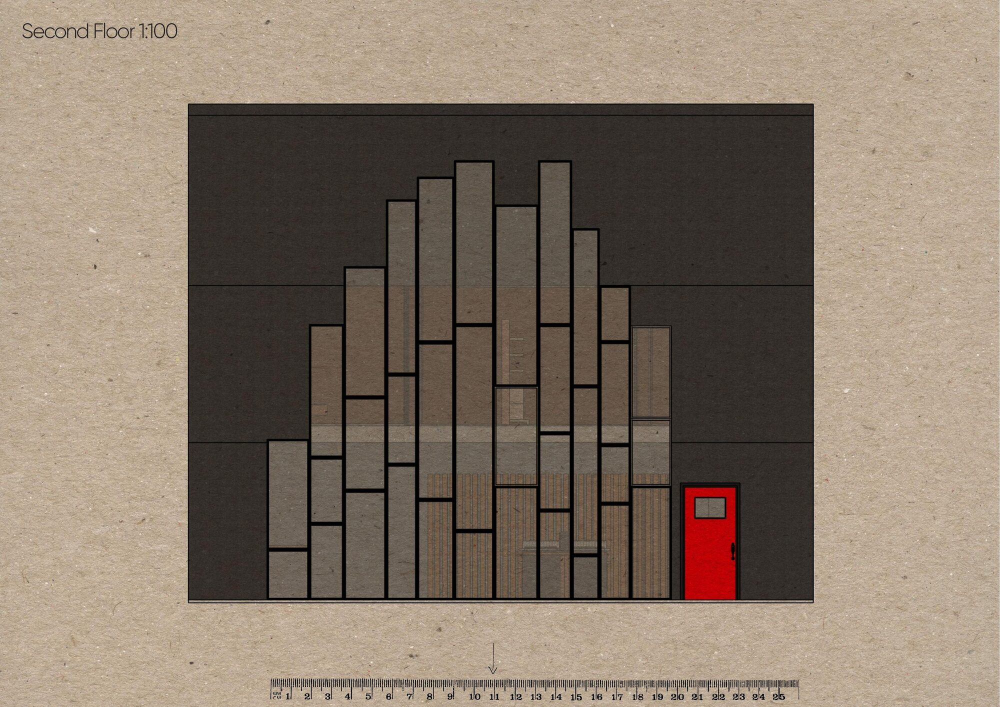
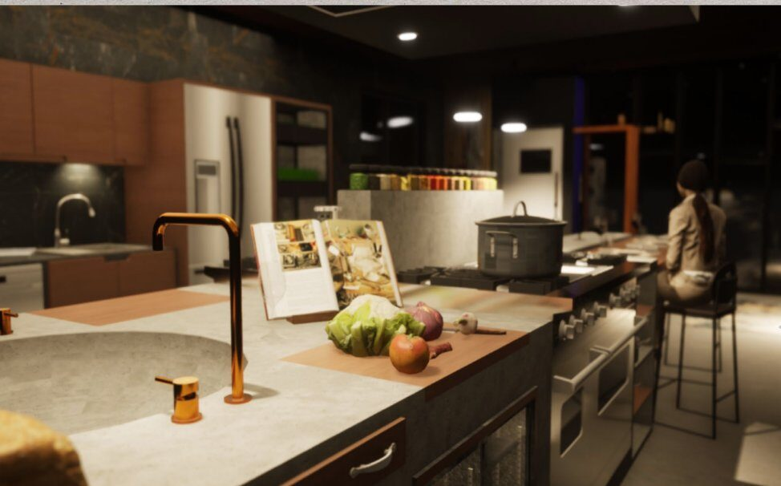
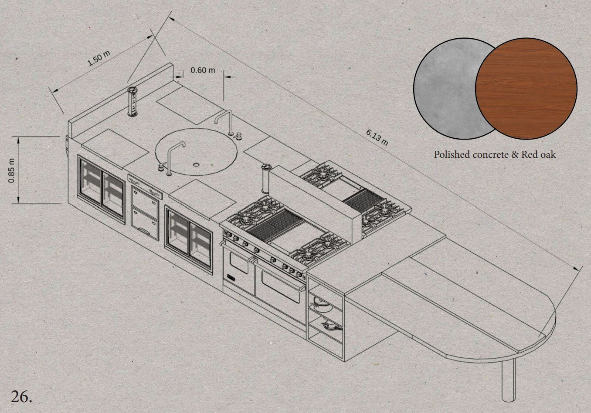
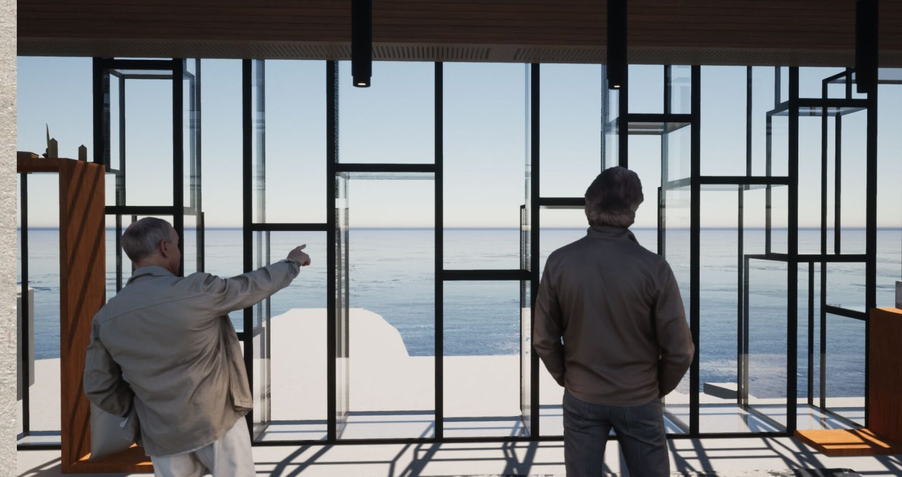
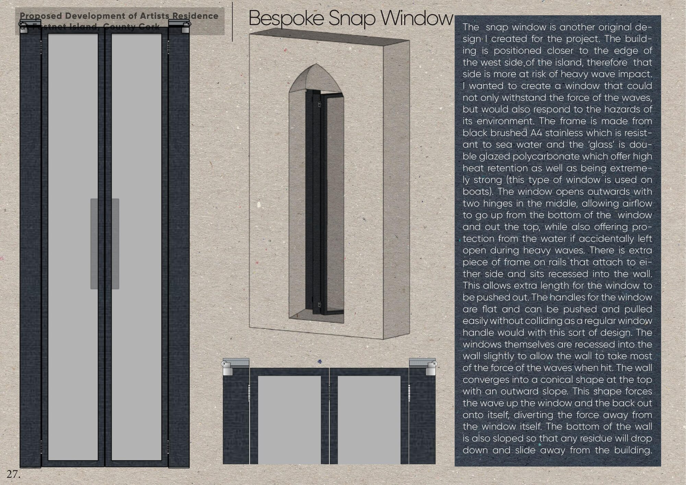
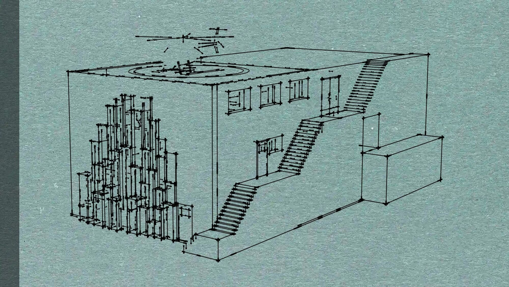
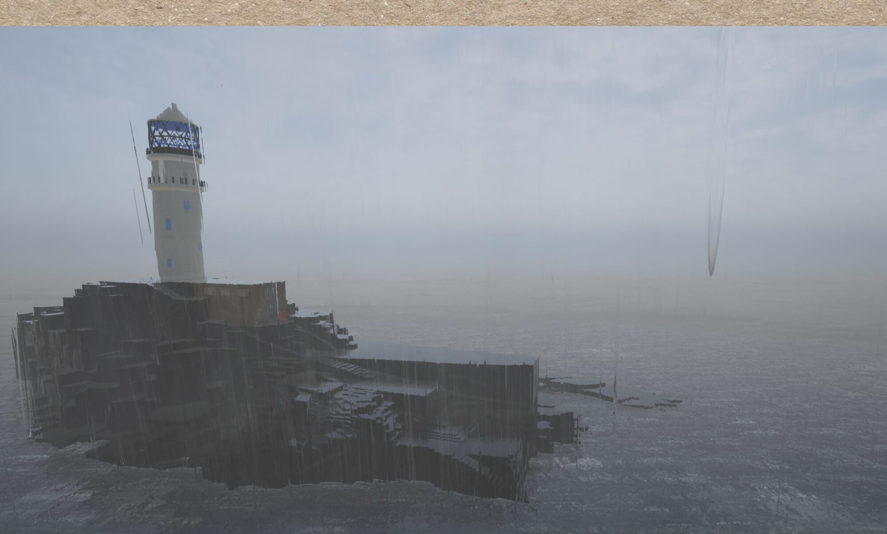
Problem: the building faces the worst of the island's Atlantic weather, and needed a window that could survive direct wave impact without sealing the room off from the view that's the whole point of being there. Approach: looked at how boats handle the same problem, double-glazed polycarbonate in a recessed black brushed-steel frame, opening outward on two centre hinges so a wave hitting it while open pushes it shut rather than tearing it off, with the surrounding wall tapering to a point that forces waves up and back rather than straight at the glass. Result: a window that survives the weather it faces without disappearing behind a solid wall instead.
Problem: the open spiral stairwell is the lighthouse's largest volume, and heat was venting through it to the lantern. Approach: traced heat loss room by room against every door and opening. Result: sealed doors on every room off the stairwell, plus a hatch near the lantern to stop heat escaping out the top.
Problem: needed a safe emergency escape route without breaking up the slender stacked-window elevation. Approach: looked at how the existing external staircase could double as an escape path. Result: a recessed exit tunnel tucked behind the stairwell wall, invisible from outside, connecting straight to the external stairs.